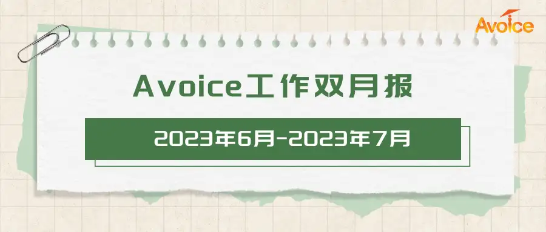

双月报速览
左右滑动，查看月报
双月大数据
月度救助工作汇总
Avoice共新增3位求助女性，正在为9位案主提供支持
此外，2023年累计收到5份个案反馈，案主诉求均基本得到解决；其中，4/5的案主感到非常满意，4/5的案主认为工作人员回复非常及时
2023年Avoice累计为19位案主提供服务，地区覆盖英国、新西兰、比利时、美国等10个国家和地区。
月度筹款工作汇总
Avoice为亚裔女性发展论坛开展筹资活动，对接了3位潜在资助方，并分别提交了筹资计划
月度传播工作汇总
公众号和其他平台账号粉丝总数9818（较4-5月增加388，环比增长4%）
在各个平台账号共发布了43条动态（较4-5月增加22，环比增长105%），动态累计浏览量19393（较4-5月增加8548，环比增长79%），最高阅读量推送为1736人阅读的“Avoice招募 | 法律及财务专业志愿者招募——长期有效”
双月优秀志愿者
共有60位志愿者被评为优秀志愿者，详细名单见后文。感谢各位志愿者的参与和付出，期待各位志愿者在下个双月继续努力！
双月大事记
开展对6个国家的反家暴普法手册的撰写
各部门联动积极筹备AWDPI论坛
发布赋能支持处志愿者指导手册，进一步优化赋能支持工作流程
各部门基本完成春招及入职培训工作
初步达成与泰国清迈联合慈善基金会、CPSA ED和HSTAR Scotland的合作
★Avoice双月报 - 2023年第4期★
双月工作简述
一、项目质量部
学术研究处
2023年6月至7月期间，
-
学术研究处搜集并发布6月与7月观察月刊，收尾比利时家暴报告和比利时职场生存报告，并召开反家暴培训会议；
此外，学术研究处协助AWDPI论坛筹备，收尾分论坛策划书并完成论文评议的招募与筛选。
监测评估处
2023年6月至7月期间，
监测评估处协助解决赋能支持处诉求，并对负责人及志愿者开展多次访谈，推动赋能支持处优化内部工作流程，并协助产出赋能支持处志愿者指导手册；
此外，监测评估处进一步优化双月报发布流程及标准，推动Avoice运行的公开透明。
项目设计处
2023年6月至7月期间，
项目设计处推动AWDPI论坛策划部各项工作，推动对接学术部、嘉宾部、运营部、宣传与视觉设计部、语言支持部、筹资部相关工作。
IT信息处
2023年6月至7月期间，
IT信息处对各部门进行技术支持 ，如协助英国国家办公室进行文件迁移工作，协助人事部门进行权限变更与邮箱回收工作；
IT信息处进行春季招募，完成了新加入成员的招聘和培训，并迭代春招多维表格 ；
此外，IT信息处推动AWDPI 网站2.0开发，完成了部分AWDPI主网站和门户网站2.0版本UI/UX设计，完成与杭州师范大学的网页开发交接，并明确了不同网站的分工和开发先后顺序。
二、救助支持部
个案对接处
2023年6月至7月期间，
个案对接处对新进成员进行培训，带领各志愿者学习2023版志愿者指导手册，推动工作专业化建设
法律支持处
2023年6月至7月期间，
法律支持处完善内部工作系统，优化成员分工明细，以帮助快速查看成员的工作量
此外，法律支持处正在为新增6个国家 撰写普法手册，进一步推动Avoice法律支持业务拓展
心理支持处
2023年6月至7月期间，
心理支持处完成课程主题2的发布，完成内部培训活动（角色扮演）1次，内部圆桌论坛1次，进一步加强心理服务组专业能力，并积极拓宽宣传口径
语言支持处
2023年6月至7月期间，
语言支持处完成春招所有成员入职，并且开始工作
语言处完成各语种常规翻译，如本双月发布英文编译文章《关系中的虐待迹象以及如何寻求/提供帮助》与意大利语编译文章《对话作家埃莱娜·费兰特：每个好的叙述者都需要写出比所谓的“真相”更加真实的故事》，并完成网站《疫情以来各国反家暴新政策观察》英文翻译，通过打破语言壁垒 推动反家暴、性别平等知识的传播
赋能支持处
2023年6月至7月期间，
赋能支持处以小组为单位完成社群运营工作，开展以迎新为主题的分享会1次，开展4次每周观影会，并启动读书会工作，召开1次线上读书会
此外，赋能支持处持续更新海外救助资源网络，完成6条赋能支持资料库数据的背调以及录入，持续跟进案主的赋能支持工作并优化工作流程
三、合作拓展部
合作拓展处
2023年6月至7月期间，
合作拓展处完成春招复盘及项目合作中心纳新培训，本次招募新成员8人，进一步壮大团队
合作拓展处完善项目合作中心管理手册及项目管理进程表，明确工作流程、项目分组及成员职责，并建立双周工时统计制度及考勤表，进一步优化工作流程
合作拓展处执行招募渠道拓展工作，完成微信公众号、小红书、微博、豆瓣等多个平台的招募信息搜集，并准备开展招募信息定点投放，为 AWDPI引流纳新
合作拓展处开展常规性合作资源背调工作，完成涵盖学联、社工、救助等4个组织的基础背调，并沟通筛选过往合作资源，用于内部发起项目的嘉宾储备
此外，合作拓展处与泰国清迈联合慈善基金会进行两次电话会议，完成初步合作沟通
筹资管理处
2023年6月至7月期间，
筹资管理处为亚裔女性发展论坛开展筹资活动，完善了论坛筹资计划，明确了筹资对象并进行对接
此外，筹资管理处继续跟进其他筹资机会，如各基金及领导力培养计划申请
救助资源处
2023年6月至7月期间，
救助资源处完成《救助资源外联模板》，为救助资源对接工作打下基础
四、传播部
2023年6月至7月期间，
采写处采写、发布稿件4篇：①《Avoice她视角｜借由女性力量，推倒高墙、打开大门——读<女性的时刻 The Moment of Lift>》;②《Avoice她树洞丨书信新专栏，关于以爱之名的PUA，我们等待你的声音！（第一期）》；③《Avoice愈见·她说｜学会对所有的暴力伤害苗头说“不”——Lusina的自我救赎旅程》；④《Avoice愈见·她说｜对话HSTAR负责人Ewelina：“凡存在心理创伤的女性，我们都会提供援助”》
传播部负责人撰写文档：新闻月刊工作指南、性别中立的平面设计，为内容产出提供优化参考
五、财务部
2023年6月至7月期间，
财务部进一步推动财务系统建设，完成对过往所有交易信息的分析和整理，并采用飞书多维表格的方式进行统一的财务管理
六、人力资源部
2023年6月至7月期间，
人力资源部举办一场新人分享会，并进一步优化招募工作，协同合作拓展部成立招募推广项目组，拓宽招募渠道
此外，人力资源部积极开展员工关系相关工作，办理入离职、休假等手续，更新员工关系团队指导手册并持续进行每日图书分享
七、比利时国家办公室
2023年6月至7月期间，
比利时国家办公室完成换届与负责人竞选，进一步推动国家办公室团队建设
八、英国国家办公室
2023年6月至7月期间，
英国国家办公室已完成春招推文发布、笔试面试初筛，综合事务处/合作拓展处招募入职与基础培训工作，以及合作拓展处老成员的内部转岗或离职等工作也已完成。英国国家办公室将持续推进救助支持处和募资处岗位长期招募和培训工作
英国国家办公室推进稿件采写工作，已完成HSTAR Scotland负责人、华人女性联盟活动和线下受助女性的稿件采写，并完成CinaAsia观影活动《消失的她》推文转发
英国国家办公室积极拓展外部关系，达成CPSA ED和HSTAR Scotland的合作拓展，线下拜访Shakiti Women's aid Edinburgh，为后续合作打下基础
此外，英国国家办公室持续推进团队内部建设，完成岗位优化、文档整理、年度工作计划制定、工作面板优化及迎新会等多项工作
九、美国国家办公室
2023年6月至7月期间，
美国国家办公室完成春季招募的笔试与面试工作，进一步扩充办公室工作人员
双月度优秀志愿者
感谢各位辛苦付出的小伙伴们！本次双月优秀志愿者名单如下，让我们再接再厉！
救助支持部
个案对接处：董智、饶若兰
法律支持处：杨泽琨、高思洁Jane
心理支持处：郭思维、谭文瑾
赋能支持处：黄奕邈、黄宇轩、宋紫睿、涂月如、杜佳昕
项目质量部
监测评估处：周璇、杜佳勋
项目设计处：苏畅、李思齐
学术研究处：庞海尘、高天月、贾雨鑫、钱思雨、沈于蓝、杨郑睿
合作拓展部
项目合作处：潘诗雨、岳冰
传播部
宣传处：戴翰林、王百慧、王南昭、章昊言、贾璨、高艺之、李芷萌、杜婉婷
采写处：秦科、Dolcia、Jane、范珊玛、陈子涵、周思帆、Lucy、吴丹、Jacqueline
人力资源部
招募团队：吴峻妹、何丽慧、李琦、种兆彤
绩效考核/员工关系团队：周文心
培训团队：秦泺辰、王实
财务部
Sophie Lin
英国国家办公室
英国综合事务处：阮晓雨、杨政睿、孙小禾、袁思豪、廖嘉愔
英国合作拓展处/筹资处：陈宣月、孙雨桐
英国救助支持处：戴玮昱、袁昕怡、郭橦、常靖梓、杨钦雯
内容来源｜Avoice Team
排版、封面制作｜游舸